National summary
Summary
| Estimate | |
|---|---|
| Cases with date of onset on the day of report generation | 1219 – 8670 |
| Expected change in daily cases | Likely increasing |
| Effective reproduction no. | 1 – 1.6 |
| Rate of spread | -0.55 – 0.26 |
| Doubling time (days) | 2.7 – Cases decreasing |
| Adjusted R-squared | 0.43 – 0.98 |
Table 1: Latest estimates of the number of cases by date of onset, the expected change in daily cases, the effective reproduction number, the rate of spread, the doubling time, and the adjusted R-squared of the exponential fit. Based on the last 7 days of data. The 95% credible interval is shown for each numeric estimate.
Reported and estimated cases by date of onset and time-varying reproduction number estimates

Figure -2: A.) Cases by date of report (bars) and estimated cases by date of onset. B.) Time-varying estimate of the effective reproduction number. Light grey ribbon = 95% credible interval. Dark grey ribbon = the interquartile range. Confidence in the estimated values is indicated by shading with reduced shading corresponding to reduced confidence.
Time-varying rate of spread and doubling time

Figure -1: A.) Time-varying estimate of the rate of spread, B.) Time-varying estimate of the doubling time in days (note that when the rate of spread is negative the doubling time is assumed to be infinite), C.) The adjusted R-squared estimates indicating the goodness of fit of the exponential regression model (with values closer to 1 indicating a better fit). Light grey ribbon = 95% credible interval; dark grey ribbon = the interquartile range. Confidence in the estimated values is indicated by shading with reduced shading corresponding to reduced confidence.
Regional Breakdown
Data availability
- Case counts by date, stratified by region, were constructed from daily datasets made publically available by the Dipartimento della Protezione Civile [@italydata; @NCoVUtils].
- Case onset dates were estimated using case counts by date of report and a distribution of reporting delays fitted to a European line-list [@kraemer2020epidemiological; @NCoVUtils].
Expected daily cases by region
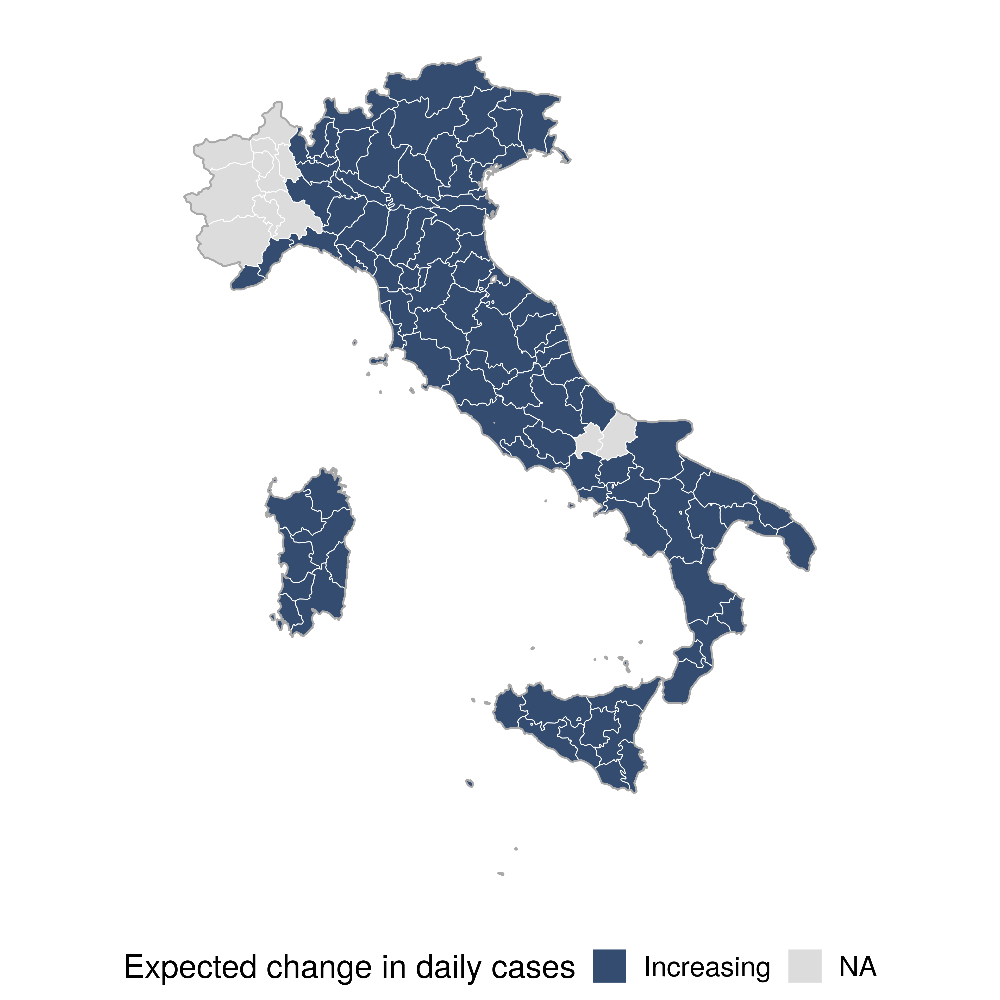
Figure 1: Map of the expected change in daily cases
Summary of latest reproduction number and case count estimates
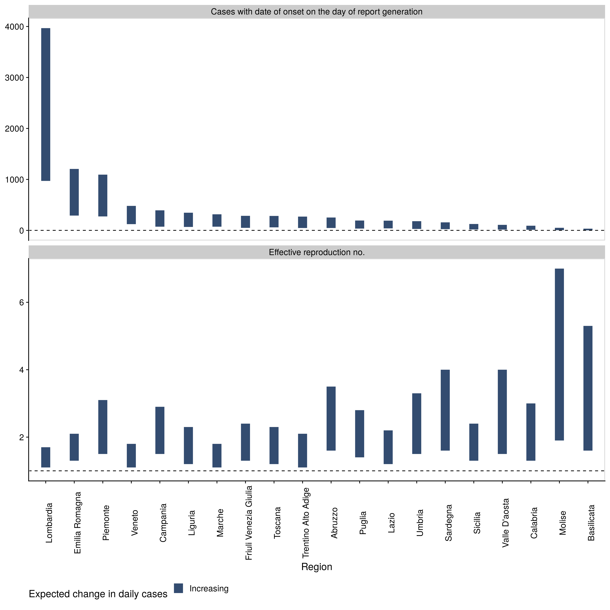
Figure 2: Cases with date of onset on the day of report generation and the time-varying estimate of the effective reproduction number (bar = 95% credible interval). regions are ordered by the number of expected daily cases and shaded based on the expected change in daily cases. The dotted line indicates the target value of 1 for the effective reproduction no. required for control and a single case required fror elimination.
Reproduction numbers over time in the six regions with the most cases currently
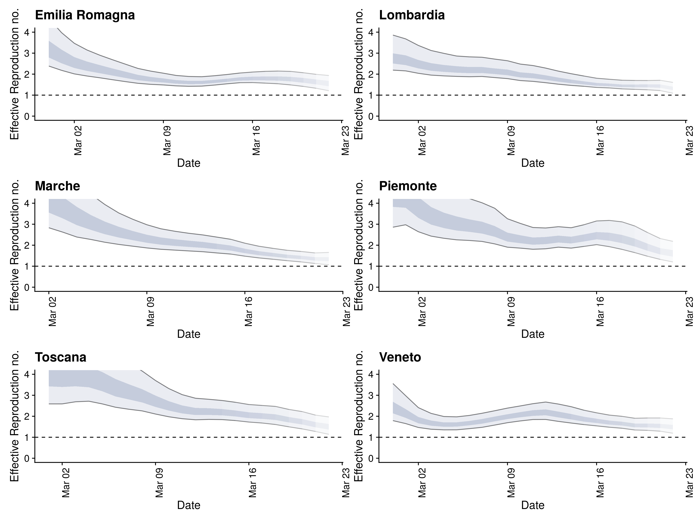
Figure 3: Time-varying estimate of the effective reproduction number (light grey ribbon = 95% credible interval; dark grey ribbon = the interquartile range) in the regions expected to have the highest number of incident cases. Confidence in the estimated values is indicated by shading with reduced shading corresponding to reduced confidence. The dotted line indicates the target value of 1 for the effective reproduction no. required for control.
Cases with date of onset on the day of report generation in the six regions with the most cases currently
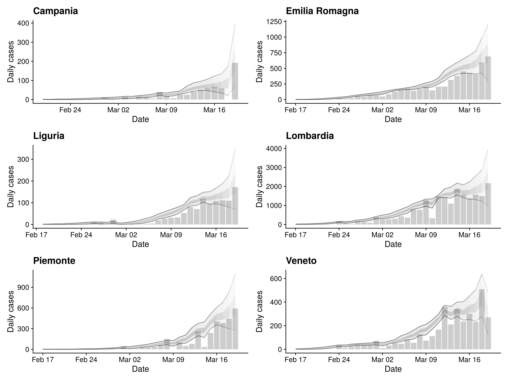
Figure 4: Cases by date of report (bars) and estimated cases by date of onset (light grey ribbon = 95% credible interval; dark grey ribbon = the interquartile range) in the countries/regions expected to have the highest number of incident cases. Confidence in the estimated values is indicated by shading with reduced shading corresponding to reduced confidence.
Reproduction numbers over time in all regions
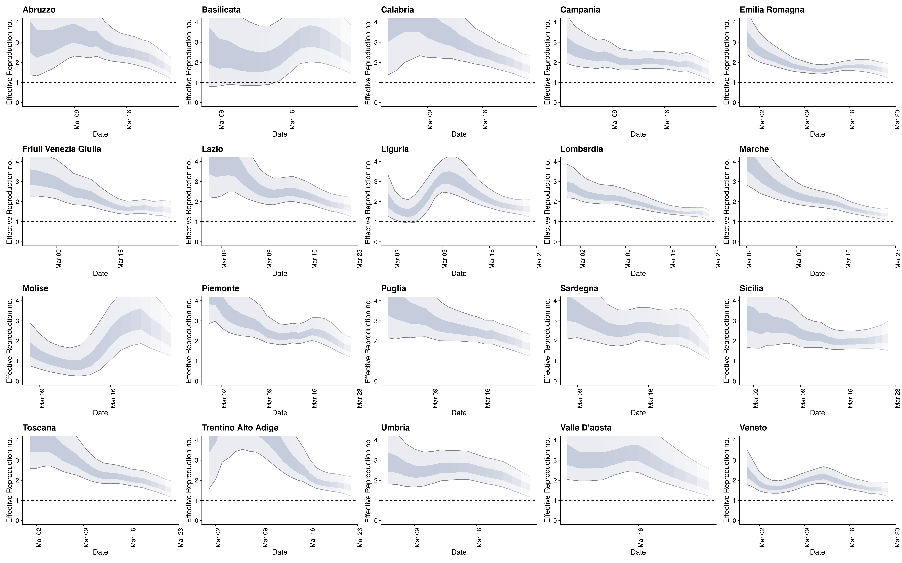
Figure 5: Time-varying estimate of the effective reproduction number (light grey ribbon = 95% credible interval; dark grey ribbon = the interquartile range) in all regions. Confidence in the estimated values is indicated by shading with reduced shading corresponding to reduced confidence. The dotted line indicates the target value of 1 for the effective reproduction no. required for control.
Cases with date of onset on the day of report generation in all regions
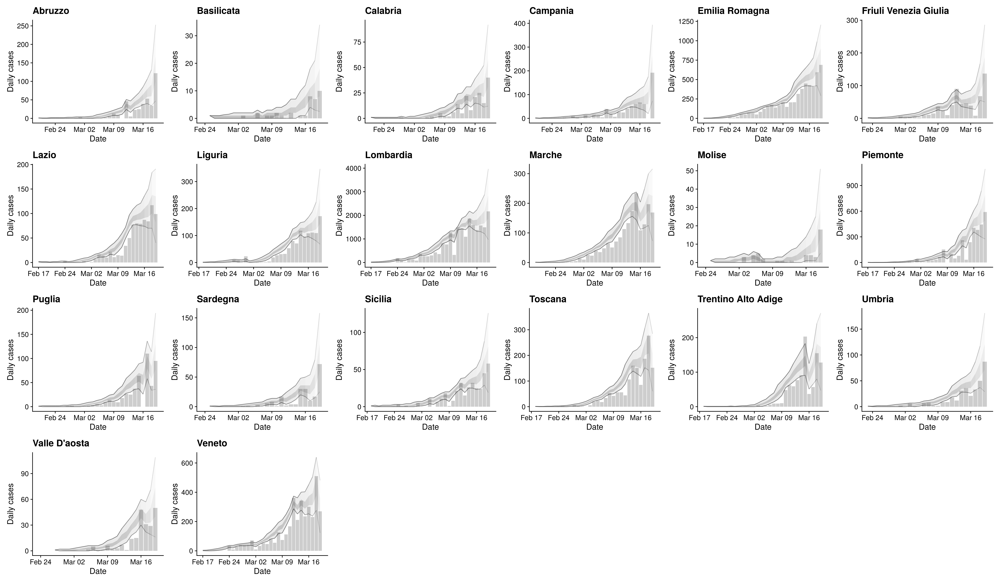
Figure 6: Cases by date of report (bars) and estimated cases by date of onset (light grey ribbon = 95% credible interval; dark grey ribbon = the interquartile range) in all regions. Confidence in the estimated values is indicated by shading with reduced shading corresponding to reduced confidence.
Latest estimates summary table
| Region | Cases with date of onset on the day of report generation | Expected change in daily cases | Effective reproduction no. | Doubling time (days) |
|---|---|---|---|---|
| Abruzzo | 36 – 140 | Increasing | 1.3 – 2.4 | 2.6 – Cases decreasing |
| Basilicata | 3 – 25 | Increasing | 1.9 – 4 | 1.7 – Cases decreasing |
| Calabria | 10 – 47 | Increasing | 1.2 – 2.5 | 2.7 – Cases decreasing |
| Campania | 72 – 183 | Increasing | 1.4 – 2.7 | 1.4 – Cases decreasing |
| Emilia Romagna | 568 – 1231 | Increasing | 1.3 – 1.9 | 4.9 – 47 |
| Friuli Venezia Giulia | 27 – 199 | Likely increasing | 1 – 2.3 | 2.5 – 68 |
| Lazio | 41 – 280 | Increasing | 1.3 – 2.1 | 4 – Cases decreasing |
| Liguria | 102 – 379 | Increasing | 1.3 – 2.3 | 3.9 – Cases decreasing |
| Lombardia | 2452 – 5808 | Increasing | 1.3 – 2 | 3.9 – 20 |
| Marche | 147 – 274 | Increasing | 1.1 – 1.4 | 6.6 – Cases decreasing |
| Molise | 2 – 24 | Increasing | 1.6 – 4 | 0.94 – Cases decreasing |
| Piemonte | 220 – 536 | Increasing | 1.2 – 2 | 4.2 – Cases decreasing |
| Puglia | 31 – 134 | Increasing | 1.2 – 2.3 | 3.2 – Cases decreasing |
| Sardegna | 17 – 56 | Increasing | 1.5 – 2.2 | 2.3 – Cases decreasing |
| Sicilia | 31 – 166 | Increasing | 1.3 – 2.6 | 3.5 – Cases decreasing |
| Toscana | 112 – 379 | Increasing | 1.1 – 1.8 | 4.2 – Cases decreasing |
| Trentino Alto Adige | 99 – 461 | Increasing | 1.2 – 2.2 | 2.3 – 47 |
| Umbria | 45 – 114 | Increasing | 1.5 – 2.5 | 2.3 – 26 |
| Valle D’aosta | 16 – 91 | Increasing | 1.4 – 3 | 3.5 – Cases decreasing |
| Veneto | 503 – 836 | Increasing | 1.3 – 1.8 | 4.4 – 43 |
Table 2: Latest estimates of the number of cases by date of onset, the effective reproduction number, and the doubling time in each rregion. Based on the last 7 days of data. The 95\% credible interval is shown for each numeric estimate.
Regional reports
Abruzzo
Summary
| Estimate | |
|---|---|
| Cases with date of onset on the day of report generation | 36 – 140 |
| Expected change in daily cases | Increasing |
| Effective reproduction no. | 1.3 – 2.4 |
| Rate of spread | -0.011 – 0.27 |
| Doubling time (days) | 2.6 – Cases decreasing |
| Adjusted R-squared | -0.13 – 0.93 |
Table 4: Latest estimates of the number of cases by date of onset, the expected change in daily cases, the effective reproduction number, the rate of spread, the doubling time, and the adjusted R-squared of the exponential fit. Based on the last 7 days of data. The 95% credible interval is shown for each numeric estimate.
Reported and estimated cases by date of onset and time-varying reproduction number estimates

Figure 4: A.) Cases by date of report (bars) and estimated cases by date of onset. B.) Time-varying estimate of the effective reproduction number. Light grey ribbon = 95% credible interval. Dark grey ribbon = the interquartile range. Confidence in the estimated values is indicated by shading with reduced shading corresponding to reduced confidence.
Time-varying rate of spread and doubling time
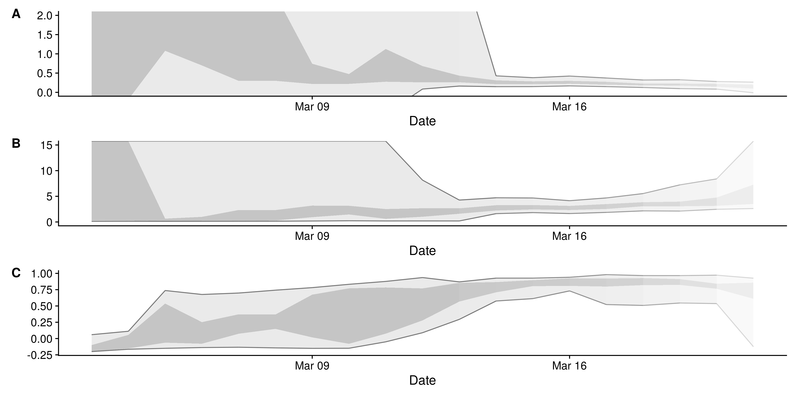
Figure 5: A.) Time-varying estimate of the rate of spread, B.) Time-varying estimate of the doubling time in days (note that when the rate of spread is negative the doubling time is assumed to be infinite), C.) The adjusted R-squared estimates indicating the goodness of fit of the exponential regression model (with values closer to 1 indicating a better fit). Light grey ribbon = 95% credible interval; dark grey ribbon = the interquartile range. Confidence in the estimated values is indicated by shading with reduced shading corresponding to reduced confidence.
Basilicata
Summary
| Estimate | |
|---|---|
| Cases with date of onset on the day of report generation | 3 – 25 |
| Expected change in daily cases | Increasing |
| Effective reproduction no. | 1.9 – 4 |
| Rate of spread | -0.049 – 0.4 |
| Doubling time (days) | 1.7 – Cases decreasing |
| Adjusted R-squared | -0.11 – 0.95 |
Table 5: Latest estimates of the number of cases by date of onset, the expected change in daily cases, the effective reproduction number, the rate of spread, the doubling time, and the adjusted R-squared of the exponential fit. Based on the last 7 days of data. The 95% credible interval is shown for each numeric estimate.
Reported and estimated cases by date of onset and time-varying reproduction number estimates

Figure 7: A.) Cases by date of report (bars) and estimated cases by date of onset. B.) Time-varying estimate of the effective reproduction number. Light grey ribbon = 95% credible interval. Dark grey ribbon = the interquartile range. Confidence in the estimated values is indicated by shading with reduced shading corresponding to reduced confidence.
Time-varying rate of spread and doubling time
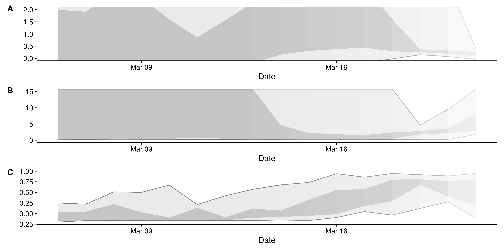
Figure 8: A.) Time-varying estimate of the rate of spread, B.) Time-varying estimate of the doubling time in days (note that when the rate of spread is negative the doubling time is assumed to be infinite), C.) The adjusted R-squared estimates indicating the goodness of fit of the exponential regression model (with values closer to 1 indicating a better fit). Light grey ribbon = 95% credible interval; dark grey ribbon = the interquartile range. Confidence in the estimated values is indicated by shading with reduced shading corresponding to reduced confidence.
Calabria
Summary
| Estimate | |
|---|---|
| Cases with date of onset on the day of report generation | 10 – 47 |
| Expected change in daily cases | Increasing |
| Effective reproduction no. | 1.2 – 2.5 |
| Rate of spread | -0.34 – 0.26 |
| Doubling time (days) | 2.7 – Cases decreasing |
| Adjusted R-squared | -0.49 – 0.71 |
Table 6: Latest estimates of the number of cases by date of onset, the expected change in daily cases, the effective reproduction number, the rate of spread, the doubling time, and the adjusted R-squared of the exponential fit. Based on the last 7 days of data. The 95% credible interval is shown for each numeric estimate.
Reported and estimated cases by date of onset and time-varying reproduction number estimates

Figure 10: A.) Cases by date of report (bars) and estimated cases by date of onset. B.) Time-varying estimate of the effective reproduction number. Light grey ribbon = 95% credible interval. Dark grey ribbon = the interquartile range. Confidence in the estimated values is indicated by shading with reduced shading corresponding to reduced confidence.
Time-varying rate of spread and doubling time

Figure 11: A.) Time-varying estimate of the rate of spread, B.) Time-varying estimate of the doubling time in days (note that when the rate of spread is negative the doubling time is assumed to be infinite), C.) The adjusted R-squared estimates indicating the goodness of fit of the exponential regression model (with values closer to 1 indicating a better fit). Light grey ribbon = 95% credible interval; dark grey ribbon = the interquartile range. Confidence in the estimated values is indicated by shading with reduced shading corresponding to reduced confidence.
Campania
Summary
| Estimate | |
|---|---|
| Cases with date of onset on the day of report generation | 72 – 183 |
| Expected change in daily cases | Increasing |
| Effective reproduction no. | 1.4 – 2.7 |
| Rate of spread | -0.075 – 0.5 |
| Doubling time (days) | 1.4 – Cases decreasing |
| Adjusted R-squared | -0.18 – 0.69 |
Table 7: Latest estimates of the number of cases by date of onset, the expected change in daily cases, the effective reproduction number, the rate of spread, the doubling time, and the adjusted R-squared of the exponential fit. Based on the last 7 days of data. The 95% credible interval is shown for each numeric estimate.
Reported and estimated cases by date of onset and time-varying reproduction number estimates

Figure 13: A.) Cases by date of report (bars) and estimated cases by date of onset. B.) Time-varying estimate of the effective reproduction number. Light grey ribbon = 95% credible interval. Dark grey ribbon = the interquartile range. Confidence in the estimated values is indicated by shading with reduced shading corresponding to reduced confidence.
Time-varying rate of spread and doubling time

Figure 14: A.) Time-varying estimate of the rate of spread, B.) Time-varying estimate of the doubling time in days (note that when the rate of spread is negative the doubling time is assumed to be infinite), C.) The adjusted R-squared estimates indicating the goodness of fit of the exponential regression model (with values closer to 1 indicating a better fit). Light grey ribbon = 95% credible interval; dark grey ribbon = the interquartile range. Confidence in the estimated values is indicated by shading with reduced shading corresponding to reduced confidence.
Emilia Romagna
Summary
| Estimate | |
|---|---|
| Cases with date of onset on the day of report generation | 568 – 1231 |
| Expected change in daily cases | Increasing |
| Effective reproduction no. | 1.3 – 1.9 |
| Rate of spread | 0.015 – 0.14 |
| Doubling time (days) | 4.9 – 47 |
| Adjusted R-squared | 0.068 – 0.92 |
Table 8: Latest estimates of the number of cases by date of onset, the expected change in daily cases, the effective reproduction number, the rate of spread, the doubling time, and the adjusted R-squared of the exponential fit. Based on the last 7 days of data. The 95% credible interval is shown for each numeric estimate.
Reported and estimated cases by date of onset and time-varying reproduction number estimates

Figure 16: A.) Cases by date of report (bars) and estimated cases by date of onset. B.) Time-varying estimate of the effective reproduction number. Light grey ribbon = 95% credible interval. Dark grey ribbon = the interquartile range. Confidence in the estimated values is indicated by shading with reduced shading corresponding to reduced confidence.
Time-varying rate of spread and doubling time

Figure 17: A.) Time-varying estimate of the rate of spread, B.) Time-varying estimate of the doubling time in days (note that when the rate of spread is negative the doubling time is assumed to be infinite), C.) The adjusted R-squared estimates indicating the goodness of fit of the exponential regression model (with values closer to 1 indicating a better fit). Light grey ribbon = 95% credible interval; dark grey ribbon = the interquartile range. Confidence in the estimated values is indicated by shading with reduced shading corresponding to reduced confidence.
Friuli Venezia Giulia
Summary
| Estimate | |
|---|---|
| Cases with date of onset on the day of report generation | 27 – 199 |
| Expected change in daily cases | Likely increasing |
| Effective reproduction no. | 1 – 2.3 |
| Rate of spread | 0.01 – 0.28 |
| Doubling time (days) | 2.5 – 68 |
| Adjusted R-squared | 0.068 – 0.88 |
Table 9: Latest estimates of the number of cases by date of onset, the expected change in daily cases, the effective reproduction number, the rate of spread, the doubling time, and the adjusted R-squared of the exponential fit. Based on the last 7 days of data. The 95% credible interval is shown for each numeric estimate.
Reported and estimated cases by date of onset and time-varying reproduction number estimates

Figure 19: A.) Cases by date of report (bars) and estimated cases by date of onset. B.) Time-varying estimate of the effective reproduction number. Light grey ribbon = 95% credible interval. Dark grey ribbon = the interquartile range. Confidence in the estimated values is indicated by shading with reduced shading corresponding to reduced confidence.
Time-varying rate of spread and doubling time

Figure 20: A.) Time-varying estimate of the rate of spread, B.) Time-varying estimate of the doubling time in days (note that when the rate of spread is negative the doubling time is assumed to be infinite), C.) The adjusted R-squared estimates indicating the goodness of fit of the exponential regression model (with values closer to 1 indicating a better fit). Light grey ribbon = 95% credible interval; dark grey ribbon = the interquartile range. Confidence in the estimated values is indicated by shading with reduced shading corresponding to reduced confidence.
Lazio
Summary
| Estimate | |
|---|---|
| Cases with date of onset on the day of report generation | 41 – 280 |
| Expected change in daily cases | Increasing |
| Effective reproduction no. | 1.3 – 2.1 |
| Rate of spread | -0.81 – 0.17 |
| Doubling time (days) | 4 – Cases decreasing |
| Adjusted R-squared | -0.044 – 0.86 |
Table 10: Latest estimates of the number of cases by date of onset, the expected change in daily cases, the effective reproduction number, the rate of spread, the doubling time, and the adjusted R-squared of the exponential fit. Based on the last 7 days of data. The 95% credible interval is shown for each numeric estimate.
Reported and estimated cases by date of onset and time-varying reproduction number estimates

Figure 22: A.) Cases by date of report (bars) and estimated cases by date of onset. B.) Time-varying estimate of the effective reproduction number. Light grey ribbon = 95% credible interval. Dark grey ribbon = the interquartile range. Confidence in the estimated values is indicated by shading with reduced shading corresponding to reduced confidence.
Time-varying rate of spread and doubling time

Figure 23: A.) Time-varying estimate of the rate of spread, B.) Time-varying estimate of the doubling time in days (note that when the rate of spread is negative the doubling time is assumed to be infinite), C.) The adjusted R-squared estimates indicating the goodness of fit of the exponential regression model (with values closer to 1 indicating a better fit). Light grey ribbon = 95% credible interval; dark grey ribbon = the interquartile range. Confidence in the estimated values is indicated by shading with reduced shading corresponding to reduced confidence.
Liguria
Summary
| Estimate | |
|---|---|
| Cases with date of onset on the day of report generation | 102 – 379 |
| Expected change in daily cases | Increasing |
| Effective reproduction no. | 1.3 – 2.3 |
| Rate of spread | -0.11 – 0.18 |
| Doubling time (days) | 3.9 – Cases decreasing |
| Adjusted R-squared | -0.17 – 0.86 |
Table 11: Latest estimates of the number of cases by date of onset, the expected change in daily cases, the effective reproduction number, the rate of spread, the doubling time, and the adjusted R-squared of the exponential fit. Based on the last 7 days of data. The 95% credible interval is shown for each numeric estimate.
Reported and estimated cases by date of onset and time-varying reproduction number estimates

Figure 25: A.) Cases by date of report (bars) and estimated cases by date of onset. B.) Time-varying estimate of the effective reproduction number. Light grey ribbon = 95% credible interval. Dark grey ribbon = the interquartile range. Confidence in the estimated values is indicated by shading with reduced shading corresponding to reduced confidence.
Time-varying rate of spread and doubling time
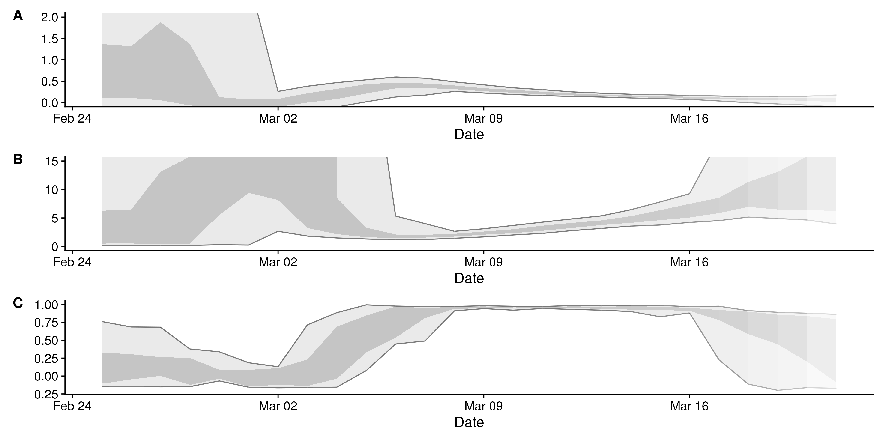
Figure 26: A.) Time-varying estimate of the rate of spread, B.) Time-varying estimate of the doubling time in days (note that when the rate of spread is negative the doubling time is assumed to be infinite), C.) The adjusted R-squared estimates indicating the goodness of fit of the exponential regression model (with values closer to 1 indicating a better fit). Light grey ribbon = 95% credible interval; dark grey ribbon = the interquartile range. Confidence in the estimated values is indicated by shading with reduced shading corresponding to reduced confidence.
Lombardia
Summary
| Estimate | |
|---|---|
| Cases with date of onset on the day of report generation | 2452 – 5808 |
| Expected change in daily cases | Increasing |
| Effective reproduction no. | 1.3 – 2 |
| Rate of spread | 0.034 – 0.18 |
| Doubling time (days) | 3.9 – 20 |
| Adjusted R-squared | 0.48 – 0.91 |
Table 12: Latest estimates of the number of cases by date of onset, the expected change in daily cases, the effective reproduction number, the rate of spread, the doubling time, and the adjusted R-squared of the exponential fit. Based on the last 7 days of data. The 95% credible interval is shown for each numeric estimate.
Reported and estimated cases by date of onset and time-varying reproduction number estimates

Figure 28: A.) Cases by date of report (bars) and estimated cases by date of onset. B.) Time-varying estimate of the effective reproduction number. Light grey ribbon = 95% credible interval. Dark grey ribbon = the interquartile range. Confidence in the estimated values is indicated by shading with reduced shading corresponding to reduced confidence.
Time-varying rate of spread and doubling time

Figure 29: A.) Time-varying estimate of the rate of spread, B.) Time-varying estimate of the doubling time in days (note that when the rate of spread is negative the doubling time is assumed to be infinite), C.) The adjusted R-squared estimates indicating the goodness of fit of the exponential regression model (with values closer to 1 indicating a better fit). Light grey ribbon = 95% credible interval; dark grey ribbon = the interquartile range. Confidence in the estimated values is indicated by shading with reduced shading corresponding to reduced confidence.
Marche
Summary
| Estimate | |
|---|---|
| Cases with date of onset on the day of report generation | 147 – 274 |
| Expected change in daily cases | Increasing |
| Effective reproduction no. | 1.1 – 1.4 |
| Rate of spread | -0.016 – 0.11 |
| Doubling time (days) | 6.6 – Cases decreasing |
| Adjusted R-squared | -0.1 – 0.69 |
Table 13: Latest estimates of the number of cases by date of onset, the expected change in daily cases, the effective reproduction number, the rate of spread, the doubling time, and the adjusted R-squared of the exponential fit. Based on the last 7 days of data. The 95% credible interval is shown for each numeric estimate.
Reported and estimated cases by date of onset and time-varying reproduction number estimates

Figure 31: A.) Cases by date of report (bars) and estimated cases by date of onset. B.) Time-varying estimate of the effective reproduction number. Light grey ribbon = 95% credible interval. Dark grey ribbon = the interquartile range. Confidence in the estimated values is indicated by shading with reduced shading corresponding to reduced confidence.
Time-varying rate of spread and doubling time
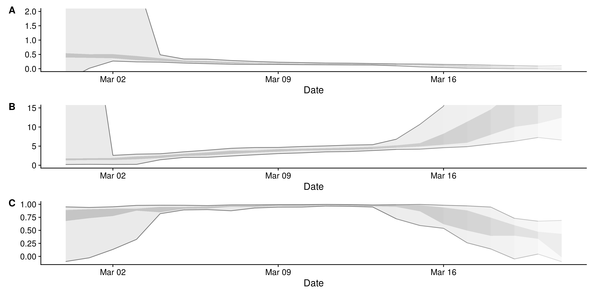
Figure 32: A.) Time-varying estimate of the rate of spread, B.) Time-varying estimate of the doubling time in days (note that when the rate of spread is negative the doubling time is assumed to be infinite), C.) The adjusted R-squared estimates indicating the goodness of fit of the exponential regression model (with values closer to 1 indicating a better fit). Light grey ribbon = 95% credible interval; dark grey ribbon = the interquartile range. Confidence in the estimated values is indicated by shading with reduced shading corresponding to reduced confidence.
Molise
Summary
| Estimate | |
|---|---|
| Cases with date of onset on the day of report generation | 2 – 24 |
| Expected change in daily cases | Increasing |
| Effective reproduction no. | 1.6 – 4 |
| Rate of spread | -0.74 – 0.74 |
| Doubling time (days) | 0.94 – Cases decreasing |
| Adjusted R-squared | -1 – 0.64 |
Table 14: Latest estimates of the number of cases by date of onset, the expected change in daily cases, the effective reproduction number, the rate of spread, the doubling time, and the adjusted R-squared of the exponential fit. Based on the last 7 days of data. The 95% credible interval is shown for each numeric estimate.
Reported and estimated cases by date of onset and time-varying reproduction number estimates

Figure 34: A.) Cases by date of report (bars) and estimated cases by date of onset. B.) Time-varying estimate of the effective reproduction number. Light grey ribbon = 95% credible interval. Dark grey ribbon = the interquartile range. Confidence in the estimated values is indicated by shading with reduced shading corresponding to reduced confidence.
Time-varying rate of spread and doubling time

Figure 35: A.) Time-varying estimate of the rate of spread, B.) Time-varying estimate of the doubling time in days (note that when the rate of spread is negative the doubling time is assumed to be infinite), C.) The adjusted R-squared estimates indicating the goodness of fit of the exponential regression model (with values closer to 1 indicating a better fit). Light grey ribbon = 95% credible interval; dark grey ribbon = the interquartile range. Confidence in the estimated values is indicated by shading with reduced shading corresponding to reduced confidence.
Piemonte
Summary
| Estimate | |
|---|---|
| Cases with date of onset on the day of report generation | 220 – 536 |
| Expected change in daily cases | Increasing |
| Effective reproduction no. | 1.2 – 2 |
| Rate of spread | -0.14 – 0.17 |
| Doubling time (days) | 4.2 – Cases decreasing |
| Adjusted R-squared | -0.19 – 0.95 |
Table 15: Latest estimates of the number of cases by date of onset, the expected change in daily cases, the effective reproduction number, the rate of spread, the doubling time, and the adjusted R-squared of the exponential fit. Based on the last 7 days of data. The 95% credible interval is shown for each numeric estimate.
Reported and estimated cases by date of onset and time-varying reproduction number estimates

Figure 37: A.) Cases by date of report (bars) and estimated cases by date of onset. B.) Time-varying estimate of the effective reproduction number. Light grey ribbon = 95% credible interval. Dark grey ribbon = the interquartile range. Confidence in the estimated values is indicated by shading with reduced shading corresponding to reduced confidence.
Time-varying rate of spread and doubling time

Figure 38: A.) Time-varying estimate of the rate of spread, B.) Time-varying estimate of the doubling time in days (note that when the rate of spread is negative the doubling time is assumed to be infinite), C.) The adjusted R-squared estimates indicating the goodness of fit of the exponential regression model (with values closer to 1 indicating a better fit). Light grey ribbon = 95% credible interval; dark grey ribbon = the interquartile range. Confidence in the estimated values is indicated by shading with reduced shading corresponding to reduced confidence.
Puglia
Summary
| Estimate | |
|---|---|
| Cases with date of onset on the day of report generation | 31 – 134 |
| Expected change in daily cases | Increasing |
| Effective reproduction no. | 1.2 – 2.3 |
| Rate of spread | -0.32 – 0.22 |
| Doubling time (days) | 3.2 – Cases decreasing |
| Adjusted R-squared | 0.13 – 0.98 |
Table 16: Latest estimates of the number of cases by date of onset, the expected change in daily cases, the effective reproduction number, the rate of spread, the doubling time, and the adjusted R-squared of the exponential fit. Based on the last 7 days of data. The 95% credible interval is shown for each numeric estimate.
Reported and estimated cases by date of onset and time-varying reproduction number estimates

Figure 40: A.) Cases by date of report (bars) and estimated cases by date of onset. B.) Time-varying estimate of the effective reproduction number. Light grey ribbon = 95% credible interval. Dark grey ribbon = the interquartile range. Confidence in the estimated values is indicated by shading with reduced shading corresponding to reduced confidence.
Time-varying rate of spread and doubling time

Figure 41: A.) Time-varying estimate of the rate of spread, B.) Time-varying estimate of the doubling time in days (note that when the rate of spread is negative the doubling time is assumed to be infinite), C.) The adjusted R-squared estimates indicating the goodness of fit of the exponential regression model (with values closer to 1 indicating a better fit). Light grey ribbon = 95% credible interval; dark grey ribbon = the interquartile range. Confidence in the estimated values is indicated by shading with reduced shading corresponding to reduced confidence.
Sardegna
Summary
| Estimate | |
|---|---|
| Cases with date of onset on the day of report generation | 17 – 56 |
| Expected change in daily cases | Increasing |
| Effective reproduction no. | 1.5 – 2.2 |
| Rate of spread | -0.1 – 0.3 |
| Doubling time (days) | 2.3 – Cases decreasing |
| Adjusted R-squared | -0.19 – 0.92 |
Table 17: Latest estimates of the number of cases by date of onset, the expected change in daily cases, the effective reproduction number, the rate of spread, the doubling time, and the adjusted R-squared of the exponential fit. Based on the last 7 days of data. The 95% credible interval is shown for each numeric estimate.
Reported and estimated cases by date of onset and time-varying reproduction number estimates

Figure 43: A.) Cases by date of report (bars) and estimated cases by date of onset. B.) Time-varying estimate of the effective reproduction number. Light grey ribbon = 95% credible interval. Dark grey ribbon = the interquartile range. Confidence in the estimated values is indicated by shading with reduced shading corresponding to reduced confidence.
Time-varying rate of spread and doubling time

Figure 44: A.) Time-varying estimate of the rate of spread, B.) Time-varying estimate of the doubling time in days (note that when the rate of spread is negative the doubling time is assumed to be infinite), C.) The adjusted R-squared estimates indicating the goodness of fit of the exponential regression model (with values closer to 1 indicating a better fit). Light grey ribbon = 95% credible interval; dark grey ribbon = the interquartile range. Confidence in the estimated values is indicated by shading with reduced shading corresponding to reduced confidence.
Sicilia
Summary
| Estimate | |
|---|---|
| Cases with date of onset on the day of report generation | 31 – 166 |
| Expected change in daily cases | Increasing |
| Effective reproduction no. | 1.3 – 2.6 |
| Rate of spread | -0.099 – 0.2 |
| Doubling time (days) | 3.5 – Cases decreasing |
| Adjusted R-squared | -0.03 – 0.94 |
Table 18: Latest estimates of the number of cases by date of onset, the expected change in daily cases, the effective reproduction number, the rate of spread, the doubling time, and the adjusted R-squared of the exponential fit. Based on the last 7 days of data. The 95% credible interval is shown for each numeric estimate.
Reported and estimated cases by date of onset and time-varying reproduction number estimates
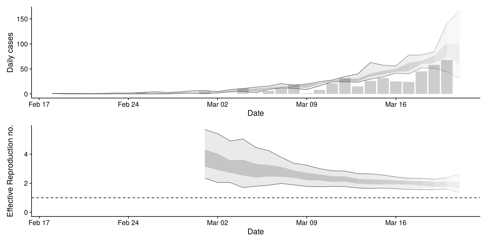
Figure 46: A.) Cases by date of report (bars) and estimated cases by date of onset. B.) Time-varying estimate of the effective reproduction number. Light grey ribbon = 95% credible interval. Dark grey ribbon = the interquartile range. Confidence in the estimated values is indicated by shading with reduced shading corresponding to reduced confidence.
Time-varying rate of spread and doubling time

Figure 47: A.) Time-varying estimate of the rate of spread, B.) Time-varying estimate of the doubling time in days (note that when the rate of spread is negative the doubling time is assumed to be infinite), C.) The adjusted R-squared estimates indicating the goodness of fit of the exponential regression model (with values closer to 1 indicating a better fit). Light grey ribbon = 95% credible interval; dark grey ribbon = the interquartile range. Confidence in the estimated values is indicated by shading with reduced shading corresponding to reduced confidence.
Toscana
Summary
| Estimate | |
|---|---|
| Cases with date of onset on the day of report generation | 112 – 379 |
| Expected change in daily cases | Increasing |
| Effective reproduction no. | 1.1 – 1.8 |
| Rate of spread | -0.13 – 0.16 |
| Doubling time (days) | 4.2 – Cases decreasing |
| Adjusted R-squared | -0.12 – 0.93 |
Table 19: Latest estimates of the number of cases by date of onset, the expected change in daily cases, the effective reproduction number, the rate of spread, the doubling time, and the adjusted R-squared of the exponential fit. Based on the last 7 days of data. The 95% credible interval is shown for each numeric estimate.
Reported and estimated cases by date of onset and time-varying reproduction number estimates

Figure 49: A.) Cases by date of report (bars) and estimated cases by date of onset. B.) Time-varying estimate of the effective reproduction number. Light grey ribbon = 95% credible interval. Dark grey ribbon = the interquartile range. Confidence in the estimated values is indicated by shading with reduced shading corresponding to reduced confidence.
Time-varying rate of spread and doubling time

Figure 50: A.) Time-varying estimate of the rate of spread, B.) Time-varying estimate of the doubling time in days (note that when the rate of spread is negative the doubling time is assumed to be infinite), C.) The adjusted R-squared estimates indicating the goodness of fit of the exponential regression model (with values closer to 1 indicating a better fit). Light grey ribbon = 95% credible interval; dark grey ribbon = the interquartile range. Confidence in the estimated values is indicated by shading with reduced shading corresponding to reduced confidence.
Trentino Alto Adige
Summary
| Estimate | |
|---|---|
| Cases with date of onset on the day of report generation | 99 – 461 |
| Expected change in daily cases | Increasing |
| Effective reproduction no. | 1.2 – 2.2 |
| Rate of spread | 0.015 – 0.3 |
| Doubling time (days) | 2.3 – 47 |
| Adjusted R-squared | 0.15 – 0.89 |
Table 20: Latest estimates of the number of cases by date of onset, the expected change in daily cases, the effective reproduction number, the rate of spread, the doubling time, and the adjusted R-squared of the exponential fit. Based on the last 7 days of data. The 95% credible interval is shown for each numeric estimate.
Reported and estimated cases by date of onset and time-varying reproduction number estimates

Figure 52: A.) Cases by date of report (bars) and estimated cases by date of onset. B.) Time-varying estimate of the effective reproduction number. Light grey ribbon = 95% credible interval. Dark grey ribbon = the interquartile range. Confidence in the estimated values is indicated by shading with reduced shading corresponding to reduced confidence.
Time-varying rate of spread and doubling time

Figure 53: A.) Time-varying estimate of the rate of spread, B.) Time-varying estimate of the doubling time in days (note that when the rate of spread is negative the doubling time is assumed to be infinite), C.) The adjusted R-squared estimates indicating the goodness of fit of the exponential regression model (with values closer to 1 indicating a better fit). Light grey ribbon = 95% credible interval; dark grey ribbon = the interquartile range. Confidence in the estimated values is indicated by shading with reduced shading corresponding to reduced confidence.
Umbria
Summary
| Estimate | |
|---|---|
| Cases with date of onset on the day of report generation | 45 – 114 |
| Expected change in daily cases | Increasing |
| Effective reproduction no. | 1.5 – 2.5 |
| Rate of spread | 0.026 – 0.3 |
| Doubling time (days) | 2.3 – 26 |
| Adjusted R-squared | 0.073 – 0.94 |
Table 21: Latest estimates of the number of cases by date of onset, the expected change in daily cases, the effective reproduction number, the rate of spread, the doubling time, and the adjusted R-squared of the exponential fit. Based on the last 7 days of data. The 95% credible interval is shown for each numeric estimate.
Reported and estimated cases by date of onset and time-varying reproduction number estimates
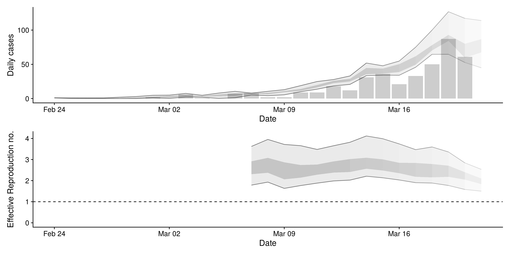
Figure 55: A.) Cases by date of report (bars) and estimated cases by date of onset. B.) Time-varying estimate of the effective reproduction number. Light grey ribbon = 95% credible interval. Dark grey ribbon = the interquartile range. Confidence in the estimated values is indicated by shading with reduced shading corresponding to reduced confidence.
Time-varying rate of spread and doubling time

Figure 56: A.) Time-varying estimate of the rate of spread, B.) Time-varying estimate of the doubling time in days (note that when the rate of spread is negative the doubling time is assumed to be infinite), C.) The adjusted R-squared estimates indicating the goodness of fit of the exponential regression model (with values closer to 1 indicating a better fit). Light grey ribbon = 95% credible interval; dark grey ribbon = the interquartile range. Confidence in the estimated values is indicated by shading with reduced shading corresponding to reduced confidence.
Valle D’aosta
Summary
| Estimate | |
|---|---|
| Cases with date of onset on the day of report generation | 16 – 91 |
| Expected change in daily cases | Increasing |
| Effective reproduction no. | 1.4 – 3 |
| Rate of spread | -0.25 – 0.2 |
| Doubling time (days) | 3.5 – Cases decreasing |
| Adjusted R-squared | -0.25 – 0.86 |
Table 22: Latest estimates of the number of cases by date of onset, the expected change in daily cases, the effective reproduction number, the rate of spread, the doubling time, and the adjusted R-squared of the exponential fit. Based on the last 7 days of data. The 95% credible interval is shown for each numeric estimate.
Reported and estimated cases by date of onset and time-varying reproduction number estimates

Figure 58: A.) Cases by date of report (bars) and estimated cases by date of onset. B.) Time-varying estimate of the effective reproduction number. Light grey ribbon = 95% credible interval. Dark grey ribbon = the interquartile range. Confidence in the estimated values is indicated by shading with reduced shading corresponding to reduced confidence.
Time-varying rate of spread and doubling time

Figure 59: A.) Time-varying estimate of the rate of spread, B.) Time-varying estimate of the doubling time in days (note that when the rate of spread is negative the doubling time is assumed to be infinite), C.) The adjusted R-squared estimates indicating the goodness of fit of the exponential regression model (with values closer to 1 indicating a better fit). Light grey ribbon = 95% credible interval; dark grey ribbon = the interquartile range. Confidence in the estimated values is indicated by shading with reduced shading corresponding to reduced confidence.
Veneto
Summary
| Estimate | |
|---|---|
| Cases with date of onset on the day of report generation | 503 – 836 |
| Expected change in daily cases | Increasing |
| Effective reproduction no. | 1.3 – 1.8 |
| Rate of spread | 0.016 – 0.16 |
| Doubling time (days) | 4.4 – 43 |
| Adjusted R-squared | 0.056 – 0.89 |
Table 23: Latest estimates of the number of cases by date of onset, the expected change in daily cases, the effective reproduction number, the rate of spread, the doubling time, and the adjusted R-squared of the exponential fit. Based on the last 7 days of data. The 95% credible interval is shown for each numeric estimate.
Reported and estimated cases by date of onset and time-varying reproduction number estimates
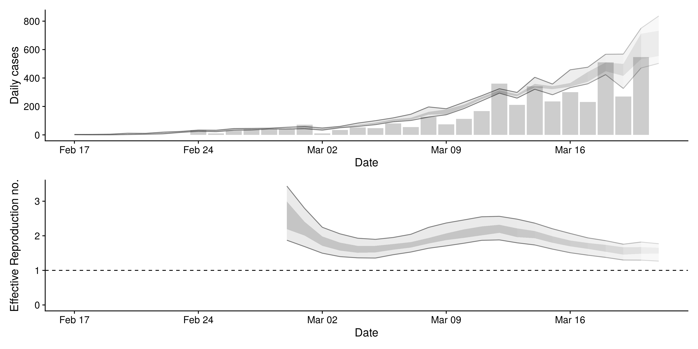
Figure 61: A.) Cases by date of report (bars) and estimated cases by date of onset. B.) Time-varying estimate of the effective reproduction number. Light grey ribbon = 95% credible interval. Dark grey ribbon = the interquartile range. Confidence in the estimated values is indicated by shading with reduced shading corresponding to reduced confidence.
Time-varying rate of spread and doubling time

Figure 62: A.) Time-varying estimate of the rate of spread, B.) Time-varying estimate of the doubling time in days (note that when the rate of spread is negative the doubling time is assumed to be infinite), C.) The adjusted R-squared estimates indicating the goodness of fit of the exponential regression model (with values closer to 1 indicating a better fit). Light grey ribbon = 95% credible interval; dark grey ribbon = the interquartile range. Confidence in the estimated values is indicated by shading with reduced shading corresponding to reduced confidence.